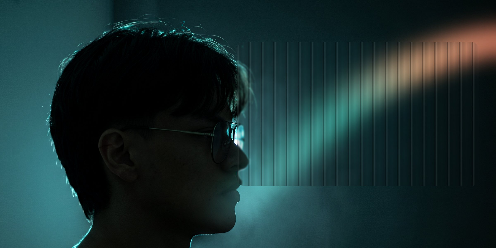

¿Quién soy?
Depende del proyecto.
Editor de video
Ver trabajo
80.000seguidores en 4 meses
Austin Marchese · edición
Austin Marchese · edición
+40%en reservas
Hotel Pinares Plaza · contenido para Meta
Hotel Pinares Plaza · contenido para Meta
Al aireen Telecafé
Por encima de la mesa · serie documental
Por encima de la mesa · serie documental
Audiovisual
Edición · cámara · color
01Videoclips
Reels
Gráfico
Piezas · identidad · redes
02Editorial
Publicaciones para hojear
03Fin de la secuencia
Ahora ya sabes quién soy.
Hablemos.
Soy Alexander Pino Caro, Diseñador Crossmedia y Creador Audiovisual en Pereira. Grabo, edito y diseño contenido que retiene la atención y genera resultados medibles para marcas y creadores.